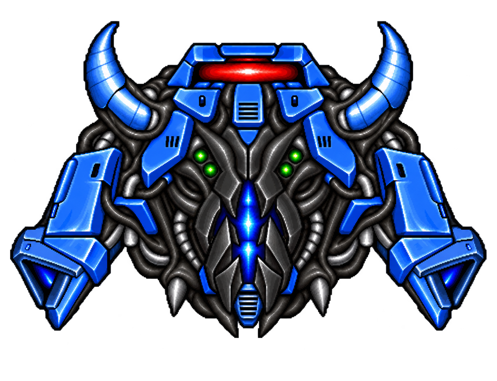
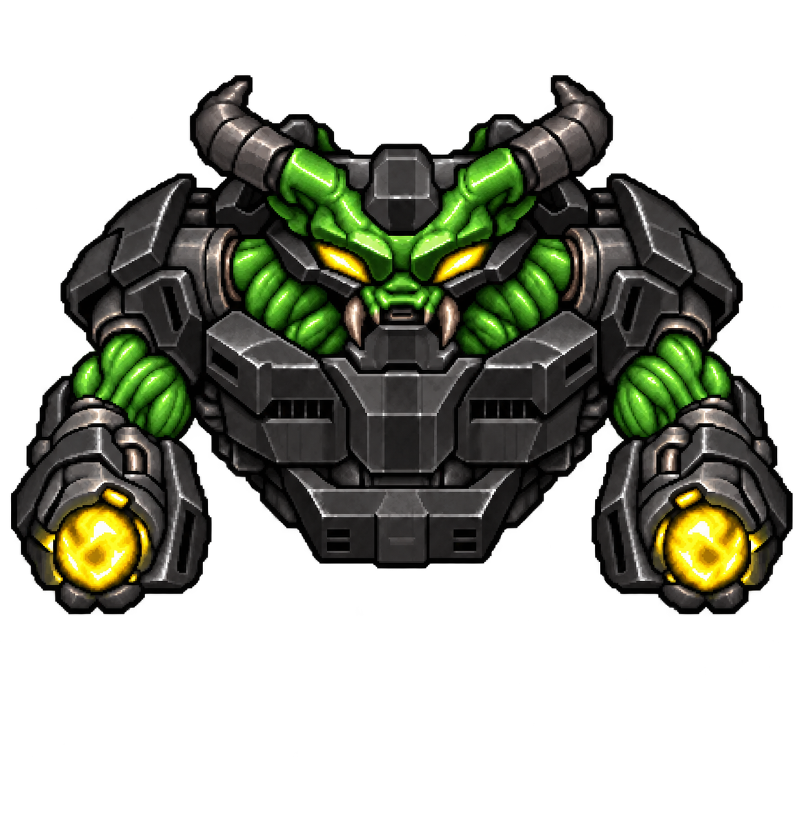
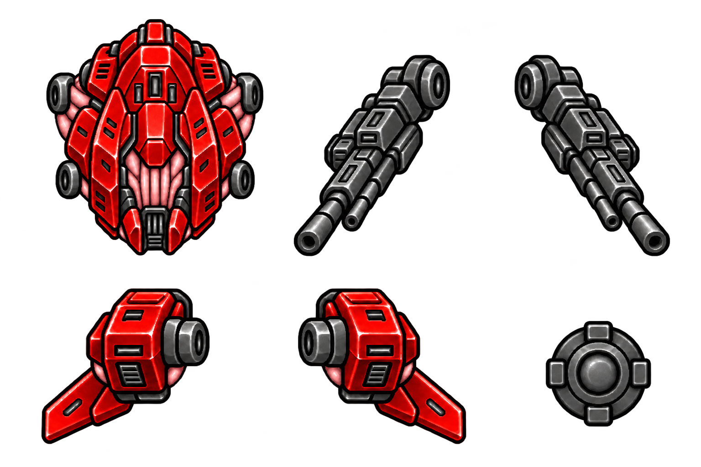
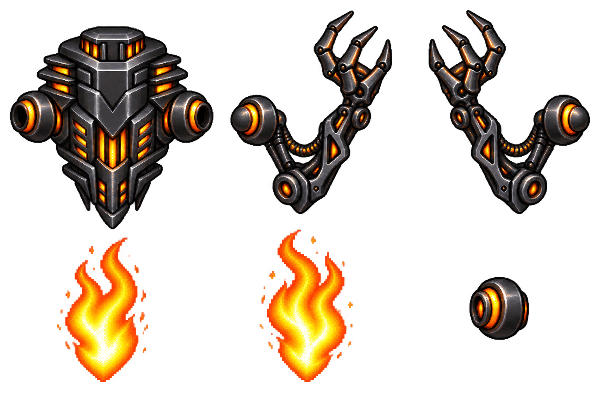
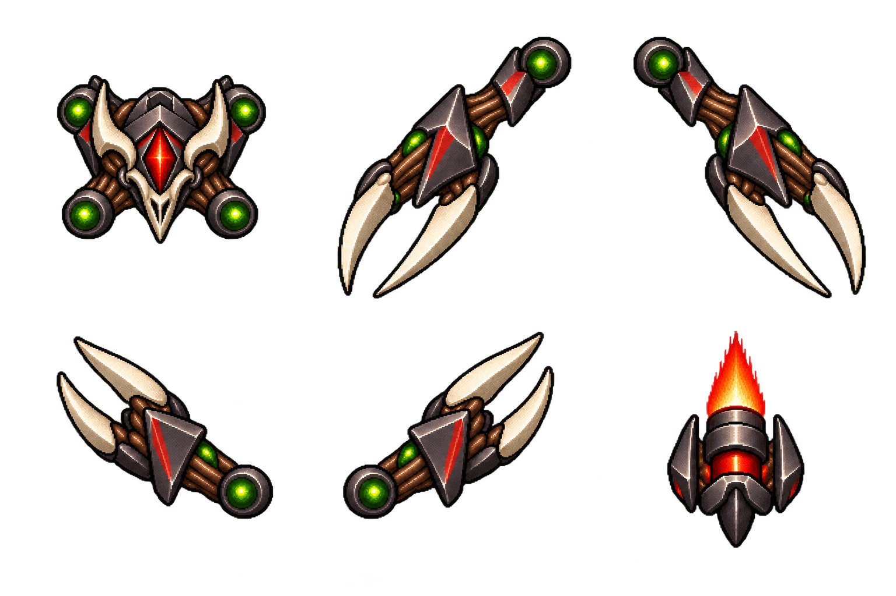

Selected enemy / revised
Blue / black hybrid
Blue horned armor, black organic tissue, four small sensors and a vertical segmented plasma aperture. Cyclops eye and wide fanged grin removed.
The seven selected enemies, with your palette changes and silhouette revisions. Compare each one with its original, then inspect the modular motion studies below.


Blue horned armor, black organic tissue, four small sensors and a vertical segmented plasma aperture. Cyclops eye and wide fanged grin removed.
New black furnace chassis. No armor spikes or central eye. Separate hull, casting arms, flame layers and joint cap.
Green organic muscles and black armor. Yellow eyes and yellow cannon plasma. The hanging triangular wrist frames are removed.
Neon-red hull and engine pods, pink flesh connections, charcoal rifle turrets and dark-gray laser markings. Separate hull, two pivoting rifles and two side pods, with a spare socket cover.
Red eye. The chosen silhouette, bone spikes, organic material and furnace remain intact.
Orange armor and a red eye with a white core. The raised shoulder fins and their triangular openings are removed.
Lightweight core with four separate claw limbs and a rear thruster. A fast, fragile kamikaze attacker concept.
These previews assemble the generated components at their attachment points. They are art and movement studies, separate from gameplay. Hellhugger's three-hit core is a demonstration of the intended fragile attacker role, not a final campaign HP value.
Upright neon-red hull · independent charcoal rifles with alternating recoil · separate side pods
Loading parts…
Black furnace hull · independently pivoting arms · separate flames
Loading parts…
Four claws draw back, lunge, then recover. Break the exposed core to scatter the modules.
Loading parts…


